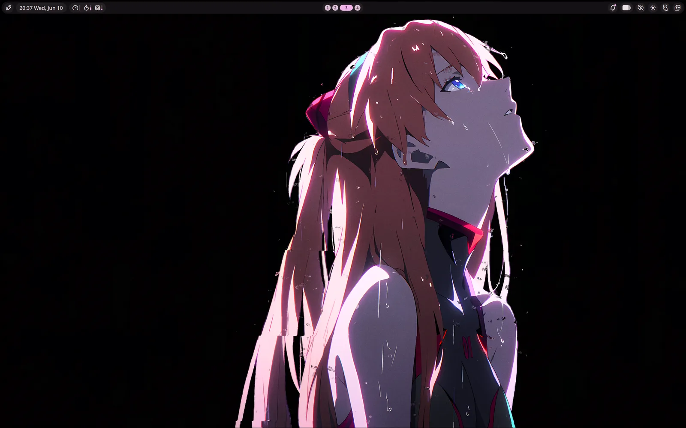

Sub-10s Boot
zstd-compressed initramfs, masked networkd stack, zram with zstd compression. Arch speed without the manual setup.
TenebraOS V1.0
A hardened, independent Hyprland distribution — under ten seconds from power button to desktop, locked down before you ever log in.
Overview
zstd-compressed initramfs, masked networkd stack, zram with zstd compression. Arch speed without the manual setup.
nftables firewall enabled, kernel hardening sysctls, full-disk LUKS encryption, signed package repo.
Wayland-native shell with a fully configured Hyprland environment, hyprlock, grimblast, and Floorp browser pre-configured.
The Desktop

Features
Steam comes pre-installed. To use Wallpaper Engine, own and install it through Steam. Once running, animated wallpapers are controlled straight from the bar via Noctalia's Wallpaper Engine extension. No extra configuration.
Joplin and Obsidian come pre-installed. Both store notes locally by default, with no account or cloud required. Joplin supports optional self-hosted sync via Joplin Server. Obsidian vaults live wherever you put them.
Firefox-based and privacy-respecting, shipped as the default browser. Strong tracking protection and a flexible, customizable UI with vertical tabs, all without feeding the Chromium monoculture. No account required, sync only if you choose it.
Peer-to-peer local file transfer via the custom [tenebra] repo. No cloud, no account.
Memory compression for faster swap performance. Sized at half available RAM automatically.
The [tenebra] repository is GPG-signed. Every package is verified before install.
Deny-inbound firewall policy active on first boot. No manual setup required.
kptr_restrict, ptrace_scope, dmesg_restrict, and BPF hardening shipped in /etc/sysctl.d/99-tenebra.conf.
Fast, minimal bootloader with Snapper snapshot entries baked in.
Built For
You know what you want your machine to look like. TenebraOS starts where most rices end.
You want Arch without spending a weekend configuring it. Everything is opinionated so you don't have to be.
Security defaults that most distros leave as an exercise for the reader. Hardened before you log in.
Pure Arch underneath — built from the ground up with its own opinions. The installer draws from Omarchy's approach, but TenebraOS is its own distro: btrfs with Snapper rollbacks in the boot menu, sane defaults everywhere, without starting from scratch.
Release
sha2561082dd4a1769ee88b49d3e9b43ca44a46b8682395d5ce02cc02ed3376493d640
Check the SHA256 sum against the published checksum file:
sha256sum -c tenebra-1.0.0-x86_64.iso.sha256Then verify the GPG signature against the TenebraOS signing key:
gpg --verify tenebra-1.0.0-x86_64.iso.asc tenebra-1.0.0-x86_64.isoThe signing key fingerprint is
12EB EDBE CF16 FEBA 7793 CF1D 6126 981E 362E 2446 —
confirm it matches before trusting the signature.